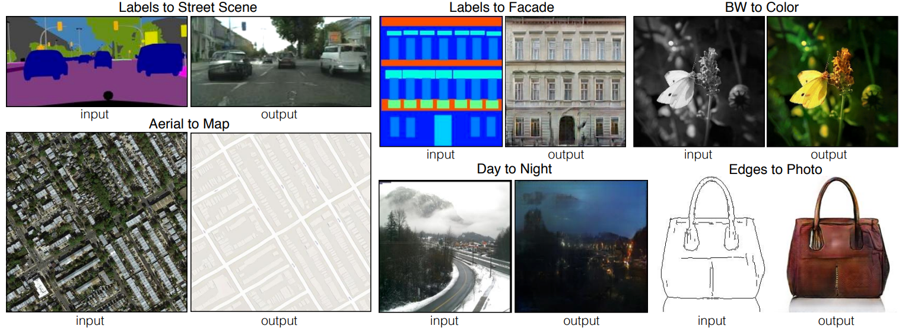

生成对抗网络（GAN）#
生成对抗网络（GAN）是一类生成式模型。顾名思义，这类模型属于无监督学习，即在训练过程中不需标签数据。GAN 通过巧妙的设计，将无监督问题转化为监督问题进行求解。
GAN 的基本原理#
两个对抗模型#
GAN 的核心是两个神经网络的对抗训练：
生成器（Generator）： 目标是生成与训练数据类似的样本。它以随机噪声向量（通常服从高斯分布）为输入，输出生成的样本。
判别器（Discriminator）： 目标是判断输入样本是真实数据（来自训练集）还是生成数据（来自生成器）。本质上是一个二分类器。
零和博弈#
两个模型的训练是零和博弈：
理想状态下，判别器无法区分真实样本与生成样本（输出概率为 \(0.5\)）。
此时，生成器已学习到训练数据的真实分布，能生成高质量的样本。
训练流程：
生成器生成一批样本，与真实样本混合后输入判别器。
判别器通过梯度下降更新自身，提高判别准确率。
生成器则通过欺骗判别器的能力更新（即最大化判别器的错误率）。
类比：
生成器如同造假者，不断伪造逼真的假币；
判别器如同警察，不断提升辨假能力。 两者在对抗中共同进步。
启示：GAN 的理念在现实中也有体现——逆境常激发潜能。
注：
训练 GAN 时，我们通常关注生成器，判别器仅作为训练工具。
但无监督图像（如互联网上的海量图片）远多于有标签数据。因此，可将 GAN 在大规模数据上预训练，再将生成器或判别器作为预训练模型用于其他任务。
GAN 的架构#
常见架构：
大多数 GAN 采用卷积神经网络（CNN），原因：
图像质量易由人类直观评估，便于监督训练。
GAN 在图像生成上表现优异（如生成逼真人脸），但在文本生成等任务上效果较差。
经典架构基于 DCGAN 论文。
注 1： GAN 早于 Transformer 问世。近年也有研究用 Transformer 替代 CNN 设计 GAN（如 StyleGAN3）。
注 2： GAN 背后有深刻的理论基础（如纳什均衡、最小最大博弈），本课程不展开。感兴趣可参考斯坦福 CS236 课程。
条件生成对抗网络（cGAN）#
局限性： 标准 GAN 从高斯噪声生成逼真图像，但无法控制生成内容。例如，训练人脸数据后，生成的面部属性（性别、发色等）完全随机，缺乏实用性。
解决方案： 条件 GAN（cGAN）在生成器和判别器输入中添加条件信息（如类别标签），实现可控生成。例如：
输入“金发”标签 → 生成金发人物图像。
输入“猫”标签 → 生成猫的图像。
 图源：
图源：GAN 的挑战#
虽然 GAN 设计巧妙，但训练极具挑战性：
深度学习模型本身训练已很困难，而 GAN 需同时训练两个对抗模型。
模型不稳定、收敛困难等问题普遍存在。
模式崩溃（Mode Collapse）#
定义： 生成器只能生成少量高度相似的样本（如同一张“完美”图像的变体），无法覆盖训练数据的多样性，但仍能欺骗判别器。
成因： 由 GAN 的训练目标（最小化判别器损失）直接导致，难以根治。
后果： 生成结果缺乏多样性，实用性大打折扣。
生成器与判别器的平衡问题#
理想状态： 生成器与判别器同步进步，保持动态平衡。
现实问题： 若一方进步过快（如判别器过强），会导致：
生成器梯度消失（无法学习）。
训练过程振荡或发散。
其他常见问题：
收敛困难： 即使训练时间很长，模型也可能无法达到稳定状态。
架构选择： 生成器与判别器的网络结构需匹配，否则易失衡。
缓解策略（非万能）：
采用 Wasserstein GAN（基于 Wasserstein 距离，缓解梯度问题）。
渐进式训练（如 ProGAN），从低分辨率逐步提升。
GAN 的应用案例#
超分辨率（SRGAN）#
原理： 利用 GAN 将低分辨率图像重建为高分辨率，同时保持细节逼真。经典方法如 SRGAN 通过对抗训练生成锐利的高清图像。
 示例：左侧为低分辨率输入，右侧为 SRGAN 生成的高分辨率输出
示例：左侧为低分辨率输入，右侧为 SRGAN 生成的高分辨率输出
数据增强#
传统方法： 通过裁剪、旋转等变换人工扩充训练数据（详见数据增强课程）。
GAN 的优势：
传统方法生成的变体有限，而 GAN 可生成无限多样化的逼真样本。
例如：训练一个猫图像的 GAN，可批量生成高质量猫图像，显著丰富训练集。
本质： GAN 学习数据分布，生成的样本更自然、多样。
图像到图像的翻译（Pix2Pix）#
定义： 将输入图像从源域转换为目标域，同时保留结构信息。经典方法如 Pix2Pix 使用条件 GAN 实现此功能。
应用示例：
线稿 → 真实照片
日间图像 → 夜间图像
卫星地图 → 街道地图
 左：输入（如线稿），右：Pix2Pix 生成的逼真输出
数据增强扩展： 可用于将合成数据（如游戏引擎生成的图像）转换为真实风格，丰富训练集。例如：
输入：Unity 生成的虚拟场景图。
输出：GAN 生成的“真实”场景图。